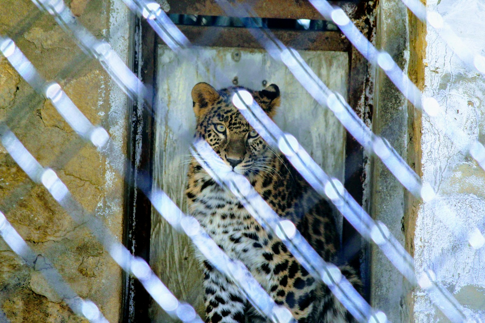
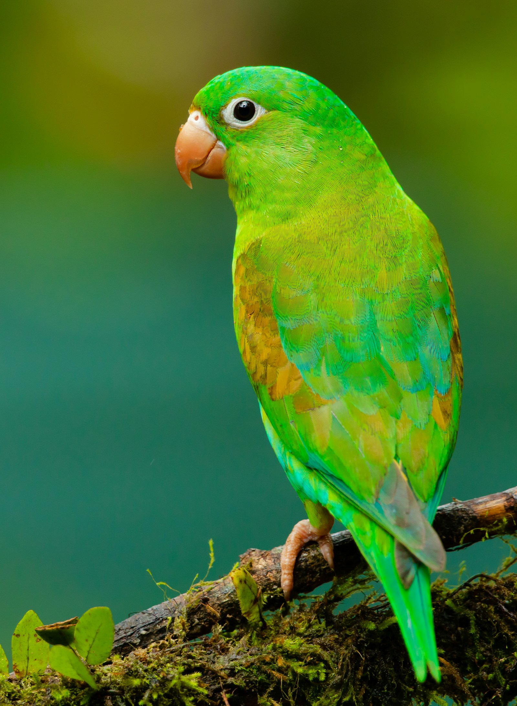

Amazon Field Guide · Threats No. 03
Silent Theft: Poaching and Wildlife Trafficking in the Amazon
Jaguars, macaws, and monkeys are pulled from the forest into a global black market. Understanding the path—from capture to sale—helps us stop it.
Poaching and illegal wildlife trafficking are among the gravest threats to Amazon biodiversity. Worldwide, wildlife crime is worth about $20 billion a year, and the Amazon is a key source region. Demand has not slowed: reports in 2024 found no clear sign that trafficking was fading. A 2025 cross-border crackdown—sometimes called Operation Green Shield—rescued about 2,100 live animals and recovered thousands of dead specimens across Brazil, Colombia, Ecuador, and Peru.
Criminal networks can be highly organised. They may disguise wild-caught animals with fake captive-breeding papers, forged permits, or altered identity tags—a kind of “wildlife laundry.” Corruption and weak checks at borders help illegal shipments slip through.
Who is targeted
Jaguars are hunted for teeth, claws, bones, and skins that sell as status items or as stand-ins for tiger products in some markets. A single skin can fetch thousands of dollars in urban trade. Jaguar numbers have fallen about 20–25% over three decades in parts of their range.
Parrots and macaws are prized as pets. In parts of Brazil, the turquoise-fronted parrot loses more than 12,000 hatchlings each season to nest theft in one metro region alone. Rare macaw eggs have been smuggled abroad so chicks can hatch far from the forest and later be sold as if they were captive-bred.
Primates face pressure for the pet trade and for bushmeat. Taking infants often means harming or killing adults that try to protect them. Mercury from mining adds another stress on the same animal groups.
“Removing predators and seed-dispersers does not just empty the forest of faces—it can slow the forest’s ability to grow back.”
Why the whole forest feels it
When apex predators disappear, smaller hunters can boom and upset the balance. When fruit-eating birds and monkeys vanish, large seeds stay put under parent trees instead of travelling to new clearings. Scientists warn of an Amazon extinction debt—with roughly 80% of human-driven extinctions still to come if pressures continue. Trafficking also invades Indigenous territories, bringing conflict; since 2020, dozens of community leaders in Peru have been killed in disputes tied to illegal extraction and related crime.
Path of the illegal wildlife trade
- Capture. Animals or eggs are taken from nests, riverbanks, or forest trails—often from remote places with few patrols.
- Transport. Hidden in bags, boxes, or vehicles, shipments move toward towns and borders. Fake papers may claim the animals were bred in captivity.
- Market. Buyers look for pets, skins, teeth, or traditional products. Prices jump far from the forest, which is why the crime pays so well for middlemen.
- Impact. Wild populations shrink; seed dispersal and predator balance weaken; communities that protect the forest face dangerous pressure.
Five pressure points that keep trafficking alive
- High prices abroad for pets, skins, and big-cat products.
- Poverty that makes a single illegal sale worth months of farm income.
- Fraudulent permits and forged breeding certificates that “wash” wild animals.
- Weak border checks and corruption that let shipments slip past.
- Overlapping crimes—mining, logging, and trafficking—that invade the same territories.

Trouble ahead—and reasons to hope
Trafficking rings rival other organised crime in planning. As long as someone will pay for a wild macaw chick or a jaguar tooth, someone else will risk the forest to supply it. Online sales and fake paperwork make the trail harder to follow. Yet enforcement is improving. Cross-border raids involving more than 1,500 officers have led to dozens of arrests and thousands of animals rescued. Strengthened CITES rules, better import inspections, and campaigns that cut demand for big-cat products all chip away at the market.
Indigenous-led protection is one of the strongest shields. The Ka’apor patrol hundreds of thousands of hectares. The A’i Cofán of Sinangoe used monitoring and legal action to stop scores of illegal cases in months—winning global recognition. Satellites, camera traps, DNA tools, and community education help rangers respond faster while offering families safer ways to earn a living.
Species can rebound when pressure lifts: hyacinth macaw recovery in the Pantanal, south of the Amazon, shows that protection works. Students help by never buying wild-caught pets, sharing facts (not rumours), and supporting organisations that back Indigenous land rights and honest trade. The Amazon’s creatures belong in the canopy—not in a shipping crate.

Odd facts
Word bank
- Poaching
- — illegally hunting or taking wild animals.
- Trafficking
- — moving and selling illegal wildlife or wildlife products.
- CITES
- — international rules that control trade in endangered species.
- Captive-bred
- — born in human care; criminals sometimes fake this label for wild animals.
- Extinction debt
- — future species losses already set in motion by habitat and wildlife crime today.
- Seed disperser
- — an animal that carries seeds so new trees can grow far from the parent plant.
Where this came from
- Mongabay — Wildlife trafficking 2024
- Mongabay — Operation Green Shield
- Mongabay — Fraud and corruption
- Mongabay — Trafficked parrots
- World Animal Protection — Peru wildlife trade
- Earth Journalism Network — Macaw eggs
- WWF — Illegal wildlife trade Amazon
- Amazon Frontlines — Indigenous guards
- Safe Worldwide — Extinction debt